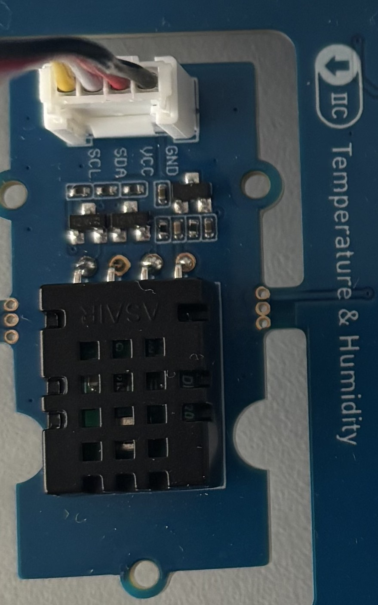
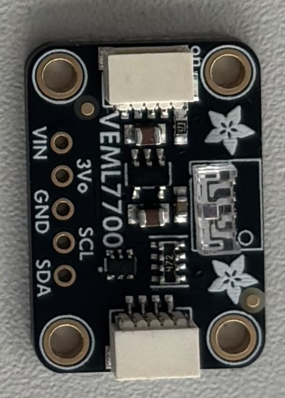
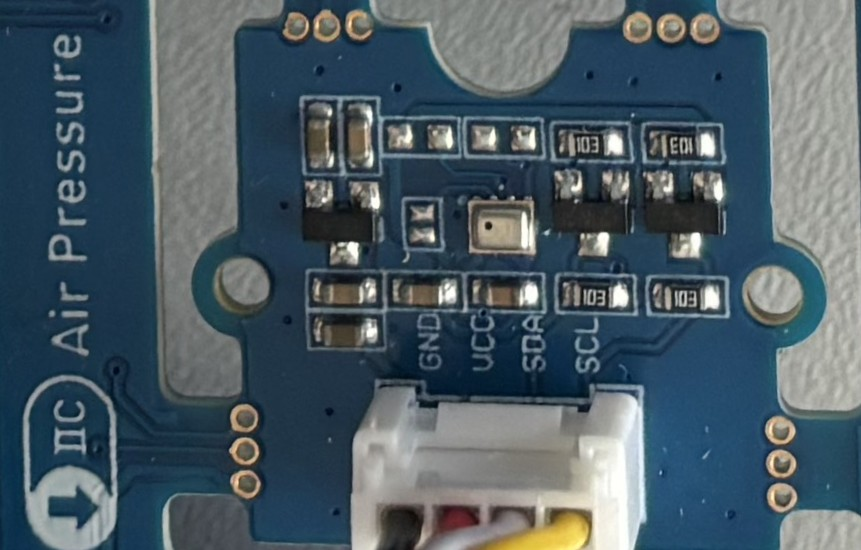
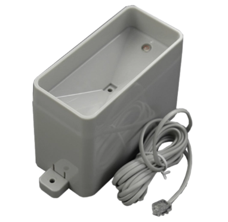
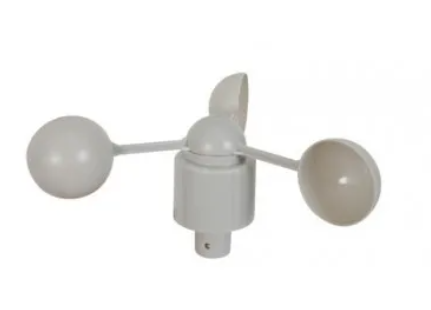
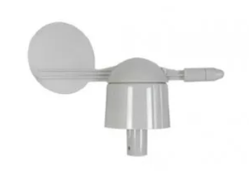
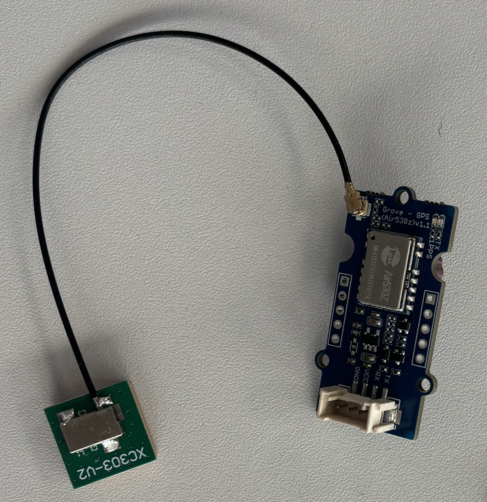

Bienvenue sur le tableau de bord de votre station météo robotisée et connectée !
Conçu autour d'un microcontrôleur ESP32, ce projet innovant réinvente la collecte de données environnementales en alliant météorologie et robotique mobile. Embarquée sur une plateforme motorisée, notre station se déplace librement pour effectuer des relevés précis en temps réel dans différents milieux (température, humidité, pression atmosphérique, luminosité), complétés par des mesures de vent et de précipitations.
Comment ça fonctionne ?
Grâce à sa connectivité 4G/5G, la carte traite et transmet instantanément toutes ces mesures afin de vous proposer un suivi graphique complet et un historique détaillé de chaque expédition. Exploration en haute montagne ou analyse locale : suivez notre robot pas à pas !
Qui en bénéficie ?
Au-delà de la simple collecte, notre station a été pensée comme un véritable outil de terrain au service des aventuriers et des scientifiques. Conçue pour garantir leur sécurité, elle permet de garder un œil en direct sur des indicateurs vitaux et de détecter instantanément les risques de ruptures climatiques. Sa force majeure réside dans son format hybride unique et 100 % amovible : le boîtier peut basculer en un clin d'œil d'un mode "robot autonome" idéal pour quadriller les plaines, à un format "boîtier de poche" ultra-léger, taillé pour affronter le relief de la haute montagne. Enfin, parce que l'étude de la nature exige de la respecter, le projet intègre une démarche d'éco-conception rigoureuse où chaque flux de données est optimisé pour offrir une sobriété numérique maximale et une autonomie énergétique prolongée.
Les Capteurs :
La température et l'humidité :

La luminosité :

La pression :

La quantité de pluie :

La vitesse du vent :

L'angle et la direction du vent :

Le GPS :
